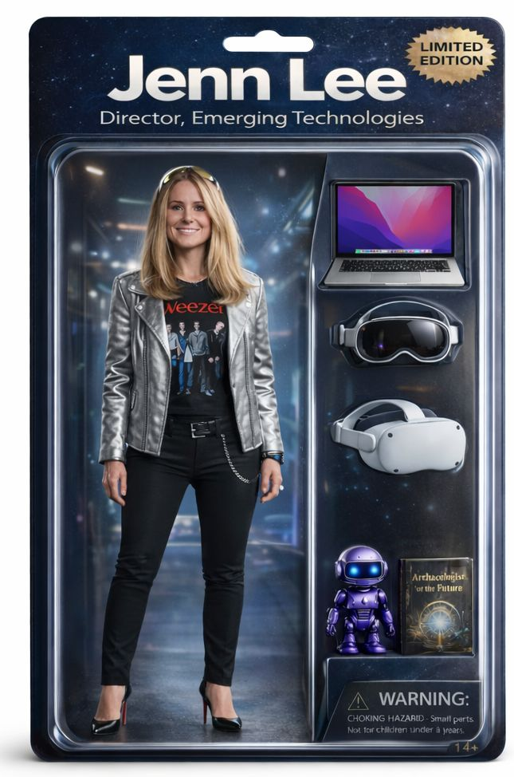
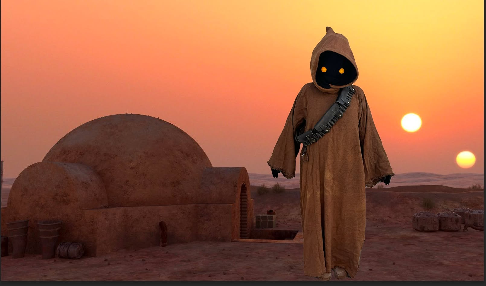

I lead Emerging Technology & Automation at Disney. My job is to find the technologies that are about to change how work gets done and figure out how to actually apply them before everyone else figures out they should care.
The technology I keep coming back to is spatial computing. Not because it's on the Gartner Hype Cycle or because someone told me to. Because I genuinely believe we're in the early chapters of something that's going to change how humans experience the world. The best version of this technology makes the seam between the physical and digital disappear. When it works, it doesn't feel like technology at all. It feels like magic.
I got my start in December 2019, when I bought an Oculus Quest on a whim. Two months later, the pandemic hit, and that headset became a lot more than a toy. In AltspaceVR, I joined a meetup called Computer Science in VR, where I learned Unity basics and immediately started building. First a full virtual holiday party for 50+ employees (complete with a cornhole game and an awards ceremony with live streaming video). Then a VR museum of Audible's Newark headquarters, built around a photogrammetry scan of the original Audible Player, the same one that sits in the Smithsonian. Then a live streaming experiment inside VR using AWS IVS, because why not try.
In 2020 I hosted a keynote called Reality Bytes at Women Impact Tech and convinced the organizers to hold the meetup inside AltspaceVR. It was one of the first tech conference events ever hosted inside a virtual world. It was also, genuinely, a lot of fun.
Since then: Meta Ray-Bans on my face most days, a Creality Raptor Pro on my desk that I'm slowly getting competent with. I may or may not have set my alarm for 7am on the day the Apple Vision Pro was released. Just sayin'. I watch Disney+ in my AVP while sitting in a landspeeder on Tatooine, which is maybe the most on-brand sentence I've ever written. I also attend a lot of events. AWE XR is a must every year. The West Side Digital Mix is a regular. Get Off My Lawn, if you know it, you know.
Outside of work I'm a member of the 501st Legion, the international Star Wars costuming organization recognized by Lucasfilm. Currently a Jawa. Working on a Stormtrooper build when I have the space for it, which is its own saga.

This blog is my practitioner's notebook. I write about what I'm building, what I'm learning, what surprised me, and what I think is worth paying attention to. I've been writing here since 2020 and have no plans to stop.
If something I wrote made you think, made you want to try something, or made you feel less alone in the weeds of an emerging technology, that's exactly what this is for.